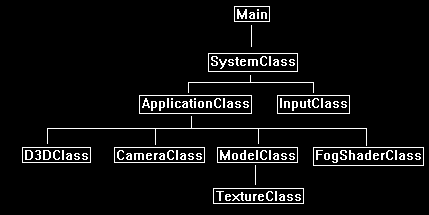
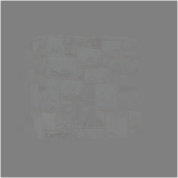

This tutorial will cover how to implement fog in DirectX 11 using HLSL and C++.
The code in this tutorial is based on the previous tutorials.
I will cover a very basic fog effect that is simple to implement.
The first step is to choose a color for the fog such as grey and then clear the back buffer to that color.
Now the entire scene starts off being fogged.
For each model that will be inside the fog you add a certain amount of fog color in the pixel shader based on the model's location inside the fog.
There are a couple of different fog equations we can use; in this tutorial I will use a linear equation but we will talk about a couple equations.
Fog Equations
Linear fog adds a linear amount of fog based on the distance you are viewing the object from:
Linear Fog = (FogEnd - ViewpointDistance) / (FogEnd - FogStart)
Exponential fog adds exponentially more fog the further away an object is inside the fog:
Exponential Fog = 1.0 / 2.71828 power (ViewpointDistance * FogDensity)
Exponential 2 fog adds even more exponential fog than the previous equation giving a very thick fog appearance:
Exponential Fog 2 = 1.0 / 2.71828 power ((ViewpointDistance * FogDensity) * (ViewpointDistance * FogDensity))
All three equations produce a fog factor. To apply that fog factor to the model's texture and produce a final pixel color value we use the following equation:
Fog Color = FogFactor * TextureColor + (1.0 - FogFactor) * FogColor
For this tutorial we will generate the fog factor in the vertex shader and then calculate the final fog color in the pixel shader.
Framework
The framework for this tutorial includes a new FogShaderClass to handle the fog rendering.
It is based on the TextureShaderClass and has just a few changes.

We will start the code section of this tutorial by examining the fog GLSL shader code first:
Fog.vs
////////////////////////////////////////////////////////////////////////////////
// Filename: fog.vs
////////////////////////////////////////////////////////////////////////////////
/////////////
// GLOBALS //
/////////////
cbuffer MatrixBuffer
{
matrix worldMatrix;
matrix viewMatrix;
matrix projectionMatrix;
};
We have a new fog constant buffer that will be set outside the shader so we can know the start point and end point of the fog effect.
cbuffer FogBuffer
{
float fogStart;
float fogEnd;
};
//////////////
// TYPEDEFS //
//////////////
struct VertexInputType
{
float4 position : POSITION;
float2 tex : TEXCOORD0;
};
The PixelInputType has been modified to have a fog factor variable.
The fog factor is calculated in the vertex shader and is then sent into the pixel shader using this float variable.
struct PixelInputType
{
float4 position : SV_POSITION;
float2 tex : TEXCOORD0;
float fogFactor : FOG;
};
////////////////////////////////////////////////////////////////////////////////
// Vertex Shader
////////////////////////////////////////////////////////////////////////////////
PixelInputType FogVertexShader(VertexInputType input)
{
PixelInputType output;
float4 cameraPosition;
// Change the position vector to be 4 units for proper matrix calculations.
input.position.w = 1.0f;
// Calculate the position of the vertex against the world, view, and projection matrices.
output.position = mul(input.position, worldMatrix);
output.position = mul(output.position, viewMatrix);
output.position = mul(output.position, projectionMatrix);
// Store the texture coordinates for the pixel shader.
output.tex = input.tex;
We first calculate the Z coordinate of the vertex in view space.
We then use that with the fog end and start position in the fog factor equation to produce a fog factor that we send into the pixel shader.
// Calculate the camera position.
cameraPosition = mul(input.position, worldMatrix);
cameraPosition = mul(cameraPosition, viewMatrix);
// Calculate linear fog.
output.fogFactor = saturate((fogEnd - cameraPosition.z) / (fogEnd - fogStart));
return output;
}
Fog.ps
////////////////////////////////////////////////////////////////////////////////
// Filename: fog.ps
////////////////////////////////////////////////////////////////////////////////
/////////////
// GLOBALS //
/////////////
Texture2D shaderTexture : register(t0);
SamplerState SampleType : register(s0);
//////////////
// TYPEDEFS //
//////////////
struct PixelInputType
{
float4 position : SV_POSITION;
float2 tex : TEXCOORD0;
float fogFactor : FOG;
};
////////////////////////////////////////////////////////////////////////////////
// Pixel Shader
////////////////////////////////////////////////////////////////////////////////
float4 FogPixelShader(PixelInputType input) : SV_TARGET
{
float4 textureColor;
float4 fogColor;
float4 finalColor;
// Sample the pixel color from the texture using the sampler at this texture coordinate location.
textureColor = shaderTexture.Sample(SampleType, input.tex);
// Set the color of the fog to grey.
fogColor = float4(0.5f, 0.5f, 0.5f, 1.0f);
The fog color equation does a linear interpolation between the texture color and the fog color based on the fog factor input value.
// Calculate the final color using the fog effect equation.
finalColor = input.fogFactor * textureColor + (1.0 - input.fogFactor) * fogColor;
return finalColor;
}
Fogshaderclass.h
The FogShaderClass is the same as the TextureShaderClass with some changes to accommodate for fog.
////////////////////////////////////////////////////////////////////////////////
// Filename: fogshaderclass.h
////////////////////////////////////////////////////////////////////////////////
#ifndef _FOGSHADERCLASS_H_
#define _FOGSHADERCLASS_H_
//////////////
// INCLUDES //
//////////////
#include <d3d11.h>
#include <d3dcompiler.h>
#include <directxmath.h>
#include <fstream>
using namespace DirectX;
using namespace std;
////////////////////////////////////////////////////////////////////////////////
// Class name: FogShaderClass
////////////////////////////////////////////////////////////////////////////////
class FogShaderClass
{
private:
struct MatrixBufferType
{
XMMATRIX world;
XMMATRIX view;
XMMATRIX projection;
};
We have a new structure for the fog buffer data.
8 bytes of padding is added to ensure a multiple of 16.
struct FogBufferType
{
float fogStart;
float fogEnd;
float padding1, padding2;
};
public:
FogShaderClass();
FogShaderClass(const FogShaderClass&);
~FogShaderClass();
bool Initialize(ID3D11Device*, HWND);
void Shutdown();
bool Render(ID3D11DeviceContext*, int, XMMATRIX, XMMATRIX, XMMATRIX, ID3D11ShaderResourceView*, float, float);
private:
bool InitializeShader(ID3D11Device*, HWND, WCHAR*, WCHAR*);
void ShutdownShader();
void OutputShaderErrorMessage(ID3D10Blob*, HWND, WCHAR*);
bool SetShaderParameters(ID3D11DeviceContext*, XMMATRIX, XMMATRIX, XMMATRIX, ID3D11ShaderResourceView*, float, float);
void RenderShader(ID3D11DeviceContext*, int);
private:
ID3D11VertexShader* m_vertexShader;
ID3D11PixelShader* m_pixelShader;
ID3D11InputLayout* m_layout;
ID3D11Buffer* m_matrixBuffer;
ID3D11SamplerState* m_sampleState;
We have a new buffer for the fog data that we will use to set the fog start and end position in the shader.
ID3D11Buffer* m_fogBuffer;
};
#endif
Fogshaderclass.cpp
////////////////////////////////////////////////////////////////////////////////
// Filename: fogshaderclass.cpp
////////////////////////////////////////////////////////////////////////////////
#include "fogshaderclass.h"
FogShaderClass::FogShaderClass()
{
m_vertexShader = 0;
m_pixelShader = 0;
m_layout = 0;
m_matrixBuffer = 0;
m_sampleState = 0;
Initialize the new fog buffer in the class constructor.
m_fogBuffer = 0;
}
FogShaderClass::FogShaderClass(const FogShaderClass& other)
{
}
FogShaderClass::~FogShaderClass()
{
}
bool FogShaderClass::Initialize(ID3D11Device* device, HWND hwnd)
{
bool result;
wchar_t vsFilename[128];
wchar_t psFilename[128];
int error;
Load the fog.vs and fog.ps HLSL shader files.
// Set the filename of the vertex shader.
error = wcscpy_s(vsFilename, 128, L"../Engine/fog.vs");
if(error != 0)
{
return false;
}
// Set the filename of the pixel shader.
error = wcscpy_s(psFilename, 128, L"../Engine/fog.ps");
if(error != 0)
{
return false;
}
// Initialize the vertex and pixel shaders.
result = InitializeShader(device, hwnd, vsFilename, psFilename);
if(!result)
{
return false;
}
return true;
}
void FogShaderClass::Shutdown()
{
// Shutdown the vertex and pixel shaders as well as the related objects.
ShutdownShader();
return;
}
The Render function now takes in a float value for both the fog start and fog end locations.
Render will set this parameter in the shader first and then call the shader to begin drawing.
bool FogShaderClass::Render(ID3D11DeviceContext* deviceContext, int indexCount, XMMATRIX worldMatrix, XMMATRIX viewMatrix,
XMMATRIX projectionMatrix, ID3D11ShaderResourceView* texture, float fogStart, float fogEnd)
{
bool result;
// Set the shader parameters that it will use for rendering.
result = SetShaderParameters(deviceContext, worldMatrix, viewMatrix, projectionMatrix, texture, fogStart, fogEnd);
if(!result)
{
return false;
}
// Now render the prepared buffers with the shader.
RenderShader(deviceContext, indexCount);
return true;
}
bool FogShaderClass::InitializeShader(ID3D11Device* device, HWND hwnd, WCHAR* vsFilename, WCHAR* psFilename)
{
HRESULT result;
ID3D10Blob* errorMessage;
ID3D10Blob* vertexShaderBuffer;
ID3D10Blob* pixelShaderBuffer;
D3D11_INPUT_ELEMENT_DESC polygonLayout[2];
unsigned int numElements;
D3D11_BUFFER_DESC matrixBufferDesc;
D3D11_SAMPLER_DESC samplerDesc;
D3D11_BUFFER_DESC fogBufferDesc;
// Initialize the pointers this function will use to null.
errorMessage = 0;
vertexShaderBuffer = 0;
pixelShaderBuffer = 0;
Load the fog vertex shader.
// Compile the vertex shader code.
result = D3DCompileFromFile(vsFilename, NULL, NULL, "FogVertexShader", "vs_5_0", D3D10_SHADER_ENABLE_STRICTNESS, 0,
&vertexShaderBuffer, &errorMessage);
if(FAILED(result))
{
// If the shader failed to compile it should have writen something to the error message.
if(errorMessage)
{
OutputShaderErrorMessage(errorMessage, hwnd, vsFilename);
}
// If there was nothing in the error message then it simply could not find the shader file itself.
else
{
MessageBox(hwnd, vsFilename, L"Missing Shader File", MB_OK);
}
return false;
}
Load the fog pixel shader.
// Compile the pixel shader code.
result = D3DCompileFromFile(psFilename, NULL, NULL, "FogPixelShader", "ps_5_0", D3D10_SHADER_ENABLE_STRICTNESS, 0,
&pixelShaderBuffer, &errorMessage);
if(FAILED(result))
{
// If the shader failed to compile it should have writen something to the error message.
if(errorMessage)
{
OutputShaderErrorMessage(errorMessage, hwnd, psFilename);
}
// If there was nothing in the error message then it simply could not find the file itself.
else
{
MessageBox(hwnd, psFilename, L"Missing Shader File", MB_OK);
}
return false;
}
// Create the vertex shader from the buffer.
result = device->CreateVertexShader(vertexShaderBuffer->GetBufferPointer(), vertexShaderBuffer->GetBufferSize(), NULL, &m_vertexShader);
if(FAILED(result))
{
return false;
}
// Create the pixel shader from the buffer.
result = device->CreatePixelShader(pixelShaderBuffer->GetBufferPointer(), pixelShaderBuffer->GetBufferSize(), NULL, &m_pixelShader);
if(FAILED(result))
{
return false;
}
// Create the vertex input layout description.
polygonLayout[0].SemanticName = "POSITION";
polygonLayout[0].SemanticIndex = 0;
polygonLayout[0].Format = DXGI_FORMAT_R32G32B32_FLOAT;
polygonLayout[0].InputSlot = 0;
polygonLayout[0].AlignedByteOffset = 0;
polygonLayout[0].InputSlotClass = D3D11_INPUT_PER_VERTEX_DATA;
polygonLayout[0].InstanceDataStepRate = 0;
polygonLayout[1].SemanticName = "TEXCOORD";
polygonLayout[1].SemanticIndex = 0;
polygonLayout[1].Format = DXGI_FORMAT_R32G32_FLOAT;
polygonLayout[1].InputSlot = 0;
polygonLayout[1].AlignedByteOffset = D3D11_APPEND_ALIGNED_ELEMENT;
polygonLayout[1].InputSlotClass = D3D11_INPUT_PER_VERTEX_DATA;
polygonLayout[1].InstanceDataStepRate = 0;
// Get a count of the elements in the layout.
numElements = sizeof(polygonLayout) / sizeof(polygonLayout[0]);
// Create the vertex input layout.
result = device->CreateInputLayout(polygonLayout, numElements, vertexShaderBuffer->GetBufferPointer(),
vertexShaderBuffer->GetBufferSize(), &m_layout);
if(FAILED(result))
{
return false;
}
// Release the vertex shader buffer and pixel shader buffer since they are no longer needed.
vertexShaderBuffer->Release();
vertexShaderBuffer = 0;
pixelShaderBuffer->Release();
pixelShaderBuffer = 0;
// Setup the description of the dynamic matrix constant buffer that is in the vertex shader.
matrixBufferDesc.Usage = D3D11_USAGE_DYNAMIC;
matrixBufferDesc.ByteWidth = sizeof(MatrixBufferType);
matrixBufferDesc.BindFlags = D3D11_BIND_CONSTANT_BUFFER;
matrixBufferDesc.CPUAccessFlags = D3D11_CPU_ACCESS_WRITE;
matrixBufferDesc.MiscFlags = 0;
matrixBufferDesc.StructureByteStride = 0;
// Create the constant buffer pointer so we can access the vertex shader constant buffer from within this class.
result = device->CreateBuffer(&matrixBufferDesc, NULL, &m_matrixBuffer);
if(FAILED(result))
{
return false;
}
// Create a texture sampler state description.
samplerDesc.Filter = D3D11_FILTER_MIN_MAG_MIP_LINEAR;
samplerDesc.AddressU = D3D11_TEXTURE_ADDRESS_WRAP;
samplerDesc.AddressV = D3D11_TEXTURE_ADDRESS_WRAP;
samplerDesc.AddressW = D3D11_TEXTURE_ADDRESS_WRAP;
samplerDesc.MipLODBias = 0.0f;
samplerDesc.MaxAnisotropy = 1;
samplerDesc.ComparisonFunc = D3D11_COMPARISON_ALWAYS;
samplerDesc.BorderColor[0] = 0;
samplerDesc.BorderColor[1] = 0;
samplerDesc.BorderColor[2] = 0;
samplerDesc.BorderColor[3] = 0;
samplerDesc.MinLOD = 0;
samplerDesc.MaxLOD = D3D11_FLOAT32_MAX;
// Create the texture sampler state.
result = device->CreateSamplerState(&samplerDesc, &m_sampleState);
if(FAILED(result))
{
return false;
}
Setup the fog buffer description and then create the new fog dynamic constant buffer.
// Setup the description of the dynamic fog constant buffer that is in the vertex shader.
fogBufferDesc.Usage = D3D11_USAGE_DYNAMIC;
fogBufferDesc.ByteWidth = sizeof(FogBufferType);
fogBufferDesc.BindFlags = D3D11_BIND_CONSTANT_BUFFER;
fogBufferDesc.CPUAccessFlags = D3D11_CPU_ACCESS_WRITE;
fogBufferDesc.MiscFlags = 0;
fogBufferDesc.StructureByteStride = 0;
// Create the fog buffer pointer so we can access the vertex shader fog constant buffer from within this class.
result = device->CreateBuffer(&fogBufferDesc, NULL, &m_fogBuffer);
if(FAILED(result))
{
return false;
}
return true;
}
void FogShaderClass::ShutdownShader()
{
Release the new fog buffer in the ShutdownShader function.
// Release the fog constant buffer.
if(m_fogBuffer)
{
m_fogBuffer->Release();
m_fogBuffer = 0;
}
// Release the sampler state.
if(m_sampleState)
{
m_sampleState->Release();
m_sampleState = 0;
}
// Release the matrix constant buffer.
if(m_matrixBuffer)
{
m_matrixBuffer->Release();
m_matrixBuffer = 0;
}
// Release the layout.
if(m_layout)
{
m_layout->Release();
m_layout = 0;
}
// Release the pixel shader.
if(m_pixelShader)
{
m_pixelShader->Release();
m_pixelShader = 0;
}
// Release the vertex shader.
if(m_vertexShader)
{
m_vertexShader->Release();
m_vertexShader = 0;
}
return;
}
void FogShaderClass::OutputShaderErrorMessage(ID3D10Blob* errorMessage, HWND hwnd, WCHAR* shaderFilename)
{
char* compileErrors;
unsigned long long bufferSize, i;
ofstream fout;
// Get a pointer to the error message text buffer.
compileErrors = (char*)(errorMessage->GetBufferPointer());
// Get the length of the message.
bufferSize = errorMessage->GetBufferSize();
// Open a file to write the error message to.
fout.open("shader-error.txt");
// Write out the error message.
for(i=0; i<bufferSize; i++)
{
fout << compileErrors[i];
}
// Close the file.
fout.close();
// Release the error message.
errorMessage->Release();
errorMessage = 0;
// Pop a message up on the screen to notify the user to check the text file for compile errors.
MessageBox(hwnd, L"Error compiling shader. Check shader-error.txt for message.", shaderFilename, MB_OK);
return;
}
bool FogShaderClass::SetShaderParameters(ID3D11DeviceContext* deviceContext, XMMATRIX worldMatrix, XMMATRIX viewMatrix,
XMMATRIX projectionMatrix, ID3D11ShaderResourceView* texture, float fogStart, float fogEnd)
{
HRESULT result;
D3D11_MAPPED_SUBRESOURCE mappedResource;
MatrixBufferType* dataPtr;
unsigned int bufferNumber;
FogBufferType* dataPtr2;
// Transpose the matrices to prepare them for the shader.
worldMatrix = XMMatrixTranspose(worldMatrix);
viewMatrix = XMMatrixTranspose(viewMatrix);
projectionMatrix = XMMatrixTranspose(projectionMatrix);
// Lock the constant buffer so it can be written to.
result = deviceContext->Map(m_matrixBuffer, 0, D3D11_MAP_WRITE_DISCARD, 0, &mappedResource);
if(FAILED(result))
{
return false;
}
// Get a pointer to the data in the constant buffer.
dataPtr = (MatrixBufferType*)mappedResource.pData;
// Copy the matrices into the constant buffer.
dataPtr->world = worldMatrix;
dataPtr->view = viewMatrix;
dataPtr->projection = projectionMatrix;
// Unlock the constant buffer.
deviceContext->Unmap(m_matrixBuffer, 0);
// Set the position of the constant buffer in the vertex shader.
bufferNumber = 0;
// Finanly set the constant buffer in the vertex shader with the updated values.
deviceContext->VSSetConstantBuffers(bufferNumber, 1, &m_matrixBuffer);
// Set shader texture resource in the pixel shader.
deviceContext->PSSetShaderResources(0, 1, &texture);
We set the fog start and fog end position in the constant buffer here by locking the buffer, setting the data, and then unlocking the buffer again.
It is the second buffer in the vertex shader so we change the bufferNumber from 0 to 1.
// Lock the fog constant buffer so it can be written to.
result = deviceContext->Map(m_fogBuffer, 0, D3D11_MAP_WRITE_DISCARD, 0, &mappedResource);
if(FAILED(result))
{
return false;
}
// Get a pointer to the data in the constant buffer.
dataPtr2 = (FogBufferType*)mappedResource.pData;
// Copy the fog information into the fog constant buffer.
dataPtr2->fogStart = fogStart;
dataPtr2->fogEnd = fogEnd;
// Unlock the constant buffer.
deviceContext->Unmap(m_fogBuffer, 0);
// Set the position of the fog constant buffer in the vertex shader.
bufferNumber = 1;
// Now set the fog buffer in the vertex shader with the updated values.
deviceContext->VSSetConstantBuffers(bufferNumber, 1, &m_fogBuffer);
return true;
}
void FogShaderClass::RenderShader(ID3D11DeviceContext* deviceContext, int indexCount)
{
// Set the vertex input layout.
deviceContext->IASetInputLayout(m_layout);
// Set the vertex and pixel shaders that will be used to render this triangle.
deviceContext->VSSetShader(m_vertexShader, NULL, 0);
deviceContext->PSSetShader(m_pixelShader, NULL, 0);
// Set the sampler state in the pixel shader.
deviceContext->PSSetSamplers(0, 1, &m_sampleState);
// Render the triangle.
deviceContext->DrawIndexed(indexCount, 0, 0);
return;
}
Applicationclass.h
The ApplicationClass has the fogshaderclass.h included and a new FogShaderClass variable.
////////////////////////////////////////////////////////////////////////////////
// Filename: applicationclass.h
////////////////////////////////////////////////////////////////////////////////
#ifndef _APPLICATIONCLASS_H_
#define _APPLICATIONCLASS_H_
///////////////////////
// MY CLASS INCLUDES //
///////////////////////
#include "d3dclass.h"
#include "inputclass.h"
#include "cameraclass.h"
#include "modelclass.h"
#include "fogshaderclass.h"
/////////////
// GLOBALS //
/////////////
const bool FULL_SCREEN = false;
const bool VSYNC_ENABLED = true;
const float SCREEN_DEPTH = 1000.0f;
const float SCREEN_NEAR = 0.3f;
////////////////////////////////////////////////////////////////////////////////
// Class name: ApplicationClass
////////////////////////////////////////////////////////////////////////////////
class ApplicationClass
{
public:
ApplicationClass();
ApplicationClass(const ApplicationClass&);
~ApplicationClass();
bool Initialize(int, int, HWND);
void Shutdown();
bool Frame(InputClass*);
private:
bool Render(float);
private:
D3DClass* m_Direct3D;
CameraClass* m_Camera;
ModelClass* m_Model;
FogShaderClass* m_FogShader;
};
#endif
Applicationclass.cpp
////////////////////////////////////////////////////////////////////////////////
// Filename: applicationclass.cpp
////////////////////////////////////////////////////////////////////////////////
#include "applicationclass.h"
ApplicationClass::ApplicationClass()
{
m_Direct3D = 0;
m_Camera = 0;
m_Model = 0;
Initialize the new FogShaderClass object in the class constructor.
m_FogShader = 0;
}
ApplicationClass::ApplicationClass(const ApplicationClass& other)
{
}
ApplicationClass::~ApplicationClass()
{
}
bool ApplicationClass::Initialize(int screenWidth, int screenHeight, HWND hwnd)
{
char modelFilename[128], textureFilename[128];
bool result;
// Create and initialize the Direct3D object.
m_Direct3D = new D3DClass;
result = m_Direct3D->Initialize(screenWidth, screenHeight, VSYNC_ENABLED, hwnd, FULL_SCREEN, SCREEN_DEPTH, SCREEN_NEAR);
if(!result)
{
MessageBox(hwnd, L"Could not initialize Direct3D", L"Error", MB_OK);
return false;
}
// Create and initialize the camera object.
m_Camera = new CameraClass;
m_Camera->SetPosition(0.0f, 0.0f, -10.0f);
m_Camera->Render();
// Set the file name of the model.
strcpy_s(modelFilename, "../Engine/data/cube.txt");
// Set the file name of the texture.
strcpy_s(textureFilename, "../Engine/data/stone01.tga");
// Create and initialize the model object.
m_Model = new ModelClass;
result = m_Model->Initialize(m_Direct3D->GetDevice(), m_Direct3D->GetDeviceContext(), modelFilename, textureFilename);
if(!result)
{
MessageBox(hwnd, L"Could not initialize the model object.", L"Error", MB_OK);
return false;
}
The new FogShaderClass object is created here.
// Create and initialize the fog shader object.
m_FogShader = new FogShaderClass;
result = m_FogShader->Initialize(m_Direct3D->GetDevice(), hwnd);
if(!result)
{
MessageBox(hwnd, L"Could not initialize the fog shader object.", L"Error", MB_OK);
return false;
}
return true;
}
void ApplicationClass::Shutdown()
{
We release the FogShaderClass object inside the Shutdown function.
// Release the fog shader object.
if(m_FogShader)
{
m_FogShader->Shutdown();
delete m_FogShader;
m_FogShader = 0;
}
// Release the model object.
if(m_Model)
{
m_Model->Shutdown();
delete m_Model;
m_Model = 0;
}
// Release the camera object.
if(m_Camera)
{
delete m_Camera;
m_Camera = 0;
}
// Release the Direct3D object.
if(m_Direct3D)
{
m_Direct3D->Shutdown();
delete m_Direct3D;
m_Direct3D = 0;
}
return;
}
bool ApplicationClass::Frame(InputClass* Input)
{
static float rotation = 0.0f;
bool result;
// Check if the user pressed escape and wants to exit the application.
if(Input->IsEscapePressed())
{
return false;
}
// Update the rotation variable each frame.
rotation -= 0.0174532925f * 0.25f;
if(rotation < 0.0f)
{
rotation += 360.0f;
}
// Render the graphics scene.
result = Render(rotation);
if(!result)
{
return false;
}
return true;
}
bool ApplicationClass::Render(float rotation)
{
XMMATRIX worldMatrix, viewMatrix, projectionMatrix;
float fogColor, fogStart, fogEnd;
bool result;
We set the color of the fog as well as the start and end position of the fog here.
// Set the color of the fog to grey.
fogColor = 0.5f;
// Set the start and end of the fog.
fogStart = 0.0f;
fogEnd = 10.0f;
Clear the back buffer to the fog color, this is a very important part of the fog effect we are using.
// Clear the buffers to begin the scene.
m_Direct3D->BeginScene(fogColor, fogColor, fogColor, 1.0f);
// Get the world, view, and projection matrices from the camera and d3d objects.
m_Direct3D->GetWorldMatrix(worldMatrix);
m_Camera->GetViewMatrix(viewMatrix);
m_Direct3D->GetProjectionMatrix(projectionMatrix);
// Rotate the world matrix by the rotation value so that the cube will spin.
worldMatrix = XMMatrixRotationY(rotation);
Now we render the cube using the new FogShaderClass object.
// Render the model using the texture shader.
m_Model->Render(m_Direct3D->GetDeviceContext());
result = m_FogShader->Render(m_Direct3D->GetDeviceContext(), m_Model->GetIndexCount(), worldMatrix, viewMatrix, projectionMatrix, m_Model->GetTexture(), fogStart, fogEnd);
if(!result)
{
return false;
}
// Present the rendered scene to the screen.
m_Direct3D->EndScene();
return true;
}
Summary
We have covered how to do a very basic linear fog effect and talked about some of the different equations you can use.
If you are going to try different equations it is better to use a larger and more populated scene, something like terrain with some trees works very well.

To Do Exercises
1. Recompile and run the program. You should get a spinning cube inside fog. Press escape to quit.
2. Change the values for the fog start and end locations.
3. Clear the back buffer to black instead of the fog color to see how the effect actually works on the models.
4. Implement the two other fog equations I listed earlier.
Source Code
Source Code and Data Files: dx11win10tut26_src.zip